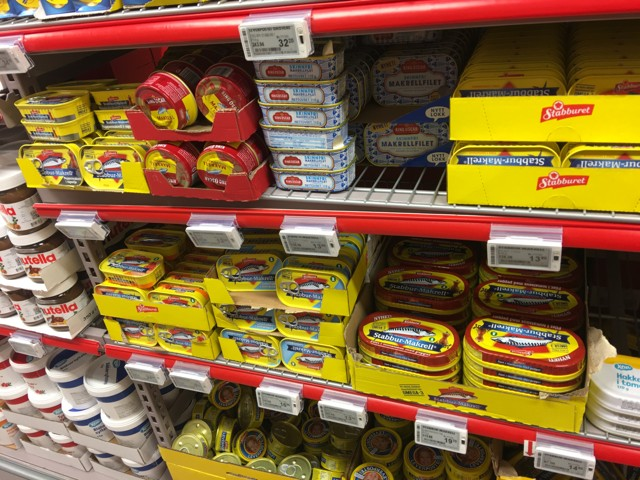

ZB-SHELF-63728335-v1 · authoring_candidate

{
"id": "ZB-SHELF-63728335-v1",
"blockers": [],
"review": [],
"advisory": [],
"metrics": {
"width": 4032,
"height": 3024,
"mode": "RGB",
"exif_orientation": 1,
"frame_count": 1,
"global_640_proxy": {
"contrast_p90_p10": 170.0,
"gray_entropy_bits": 7.761901672661865,
"edge_fraction_16": 0.21868314636055308
},
"object_count": 14,
"objects_per_MP": 1.1482216343327454,
"class_count": 14,
"known_fraction": 1.0,
"repeated_classes": 0,
"spatial_entropy_4x4": 0.7375530162286867,
"median_bbox_short_px": 315.0,
"p10_bbox_short_px": 216.0,
"edge_touching_count": 1,
"nearcolor_pair_count": 3,
"different_class_neighbor_pairs": 30,
"nearcolor_neighbor_fraction": 0.1,
"bbox_overlap_pair_count": 2,
"han_text_coverage": 0.0,
"distinct_dependency_regions": 6,
"effective_counterfactuals": 5
},
"source": {
"kind": "real_photo",
"url": "https://commons.wikimedia.org/wiki/File:Mackerel_in_tomato_sauce,_etc.,_product_aisle-shop_shelves_in_Meny_Supermarket,_Bergen_Storsenter_Shopping_Mall,_Bergen,_Norway,_2017-10-23.jpg",
"license_url": "https://creativecommons.org/licenses/by-sa/4.0",
"authorization": "verified",
"scene_id": "commons:63728335"
},
"difficulty_status": "no_complete_failure_recorded",
"annotation_provenance": "author_manual_bbox",
"preview": "001.jpg",
"nearcolor_pairs": [
{
"a": "tag_A3_1390",
"b": "A3_bay",
"deltaE76": 6.48643970273929
},
{
"a": "tag_distract_1310",
"b": "tag_B2_1690",
"deltaE76": 9.12533939149181
},
{
"a": "tag_B3_1970",
"b": "tag_distract_1310",
"deltaE76": 6.337075497043111
}
],
"overlap_candidates": [
{
"a": "tag_A3_1390",
"b": "B2_bay",
"iom": 0.38095238095238093
},
{
"a": "tag_A4_1390",
"b": "B3_bay",
"iom": 1.0
}
],
"roi_metrics": [
{
"id": "r1_A2_red_round",
"file": "001_roi1.png",
"contrast_p90_p10": 135.0,
"gray_entropy_bits": 7.276330084664329,
"edge_fraction_16": 0.08376560088799849
},
{
"id": "r2_A3_kingoscar_back",
"file": "001_roi2.png",
"contrast_p90_p10": 162.0,
"gray_entropy_bits": 7.749759182853091,
"edge_fraction_16": 0.15677508548616678
},
{
"id": "r3_A4_top_right",
"file": "001_roi3.png",
"contrast_p90_p10": 156.0,
"gray_entropy_bits": 6.946013397987954,
"edge_fraction_16": 0.03257433122211586
},
{
"id": "r4_B1_B2_salsa_tomat",
"file": "001_roi4.png",
"contrast_p90_p10": 145.0,
"gray_entropy_bits": 7.664641378903133,
"edge_fraction_16": 0.09409023724227773
},
{
"id": "r5_B3_pepper_3x2",
"file": "001_roi5.png",
"contrast_p90_p10": 159.0,
"gray_entropy_bits": 7.590949792614737,
"edge_fraction_16": 0.0675239863819251
},
{
"id": "r6_tags_lower_rail",
"file": "001_roi6.png",
"contrast_p90_p10": 156.0,
"gray_entropy_bits": 7.648191708014701,
"edge_fraction_16": 0.06622455221657082
}
],
"reasoning_metrics": {
"node_count": 19,
"max_depth": 7,
"branch_nodes": 12,
"join_nodes": 9,
"multi_visual_join_nodes": 9,
"output_count": 6,
"outputs_with_visual_ancestry": 6,
"output_visual_coverage": 1.0,
"state_nodes": 1,
"parameter_nodes": 2,
"output_evidence_regions": {
"out_q1": [
"r1_A2_red_round",
"r2_A3_kingoscar_back",
"r3_A4_top_right",
"r4_B1_B2_salsa_tomat",
"r5_B3_pepper_3x2",
"r6_tags_lower_rail"
],
"out_q2": [
"r1_A2_red_round",
"r2_A3_kingoscar_back",
"r3_A4_top_right",
"r4_B1_B2_salsa_tomat",
"r5_B3_pepper_3x2"
],
"out_q3": [
"r1_A2_red_round",
"r2_A3_kingoscar_back",
"r3_A4_top_right",
"r4_B1_B2_salsa_tomat",
"r5_B3_pepper_3x2"
],
"out_q4": [
"r1_A2_red_round",
"r2_A3_kingoscar_back",
"r3_A4_top_right",
"r4_B1_B2_salsa_tomat",
"r5_B3_pepper_3x2",
"r6_tags_lower_rail"
],
"out_q5": [
"r1_A2_red_round",
"r2_A3_kingoscar_back",
"r3_A4_top_right",
"r4_B1_B2_salsa_tomat",
"r5_B3_pepper_3x2",
"r6_tags_lower_rail"
],
"out_q6": [
"r1_A2_red_round",
"r2_A3_kingoscar_back",
"r3_A4_top_right",
"r4_B1_B2_salsa_tomat",
"r5_B3_pepper_3x2",
"r6_tags_lower_rail"
]
}
},
"measurement_margins": [
{
"id": "dx_near_720",
"ratio": 2.75,
"unit": "px"
},
{
"id": "dx_max_2050",
"ratio": 5.583333333333333,
"unit": "px"
}
],
"platform_points": [
{
"xy": [
1915,
865
],
"label": "A3 蓝白方罐列第 4 罐背面营养表朝前（唯一背面翻转罐），作者关键证据点"
},
{
"xy": [
3680,
560
],
"label": "A4 右侧宽黄托上托右列正立罐（4 罐中唯一正立，其余 3 罐倒置），作者关键证据点"
},
{
"xy": [
2760,
2700
],
"label": "下层红杠 B3 真实价签 19.70 kr（须区分左侧 13.10 肝酱签、右侧红向下箭头 14.80 签及上方 13.90 跨层签），作者关键证据点"
}
],
"evaluation_counts": {
"correct": 0,
"incorrect": 0,
"timeout": 0,
"infra_error": 0,
"partial": 0
},
"decision": "authoring_candidate"
}